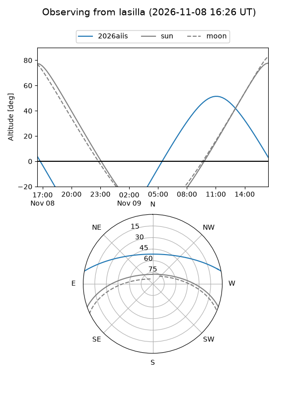
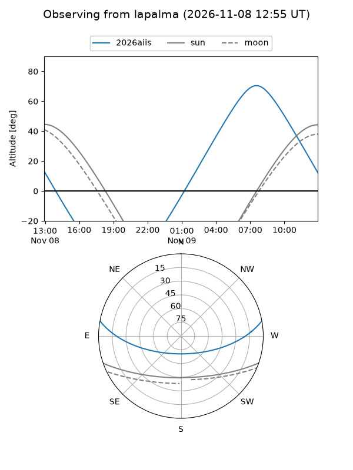
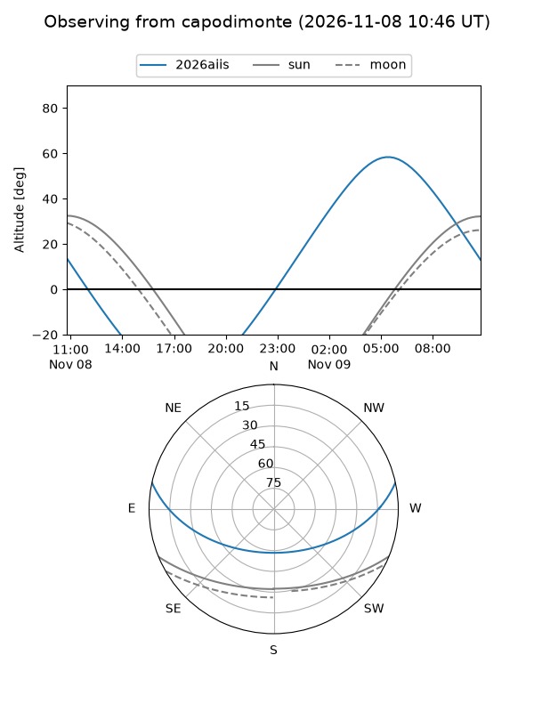
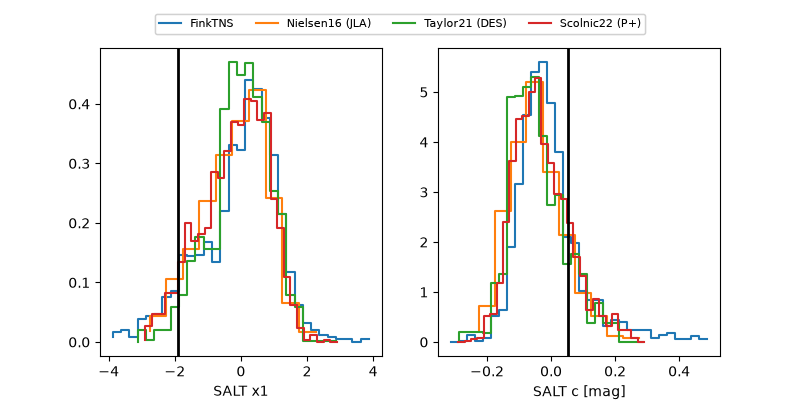

2026aiis
Target 2026aiis at 2026-11-09 01:09
Aliases and brokers:
FINK-ZTF: ztf.fink-portal.org/ZTF26acevivk
Lasair-ZTF: lasair-ztf.lsst.ac.uk/objects/ZTF26acevivk
ALeRCE-ZTF: alerce.online/object/ZTF26acevivk
YSE-PZ: ziggy.ucolick.org/yse/transient_detail/2026aiis
TNS name: wis-tns.org/object/2026aiis
Direct TNS query: direct search
alt names
ZTF26acevivk (ztf,fink_ztf)
2026aiis (tns,yse)
Coordinates:
equatorial (ra, dec) = 143.3997,+9.37758
equatorial (HMS+DMS) = 09:33:35.93,+09:22:39.31
galactic (l, b) = (224.0542,+40.16893)
Flags:
peak dt: +8.4
Photometry:
last ztfg=19.99, ztfr=19.72
2 ztfg, 1 ztfr detections
Lightcurve
Visibility



Additional plots
